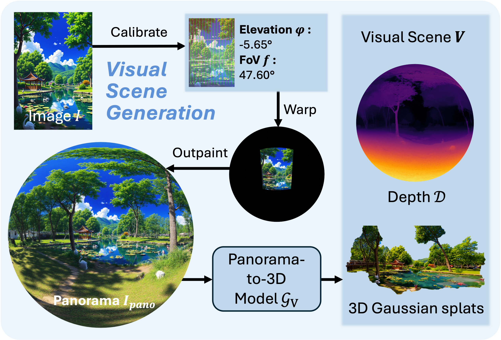
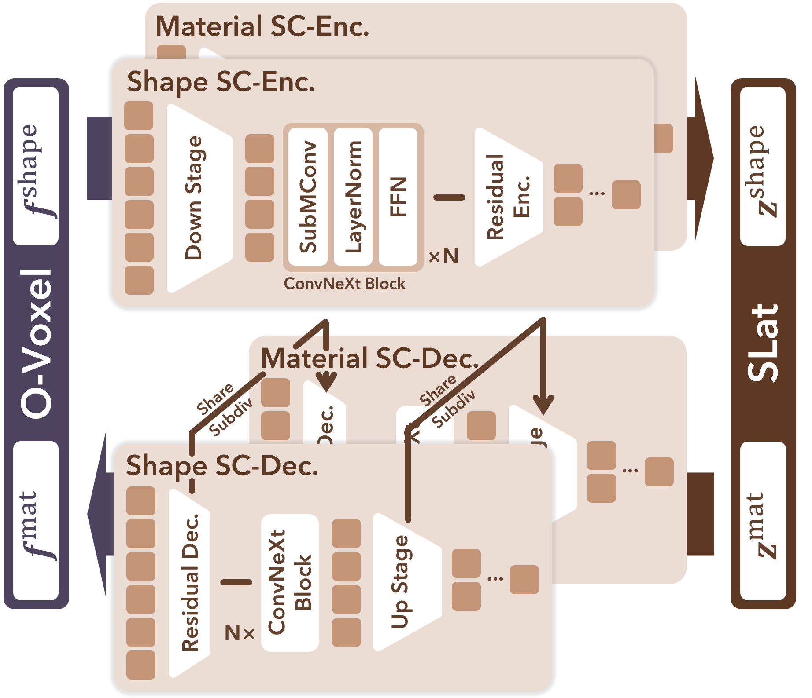

Interactive Demo
Pipeline

Visual Scene Generation
SonoWorld first builds the visual scene V from a single image through a three-stage process:
(1) Calibrate the image I by estimating the camera elevation φ and field of view f;
(2) Warp the calibrated image I into the panoramic domain and outpaint it to obtain a full 360° panorama Ipano;
(3) Lift the panorama Ipano to 3D using a panorama-to-3D model GV, producing photorealistic 3D Gaussian splats and panoramic depth map D, which together form the visual scene V.
SC-VAE: Sparse Compression VAE
We introduce a Sparse Compression 3D VAE, employing a Sparse Residual Autoencoding scheme to directly compress voxel data.
16×
Downsampling
~9.6K
Latent Tokens for 10243
It encodes a fully textured 3D asset into a highly compact representation with negligible perceptual degradation, enabling efficient large-scale generative modeling.

Citation
@article{jin2026sonoworld,
title={
SonoWorld: From One Image to a 3D Audio-Visual Scene},
author={
Jin, Derong and Chen, Xiyi and Lin, Ming and Gao, Ruohan},
booktitle={
Proceedings of the IEEE/CVF Conference on Computer Vision and Pattern Recognition (CVPR)},
year={
2026}
}